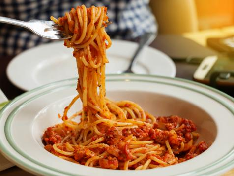

Spaghetti

Description
Spaghetti is a great recipe that is easy to make but
delicious! It is something the whole family will love!
Ingredients
- one can tomato sauce
- one package pasta
- ground beef
- parmesean cheese
Steps
- Boil 16 cups of water in a large pot. When boiling,
add pasta and cook for 10 minutes.
- In a sauce pan, add ground beef on
medium heat. Cook until brown.
- Drain grease from the cooked ground beef.
- Add tomato sauce to the ground beef and stir
until hot.
- Drain pasta noodles and add to tomato
sauce.
- Enjoy!